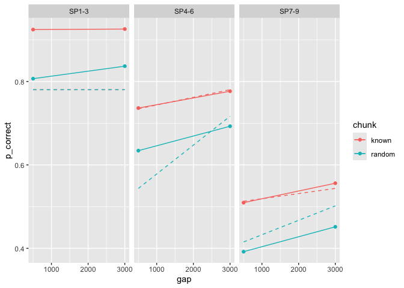

Code
library(tidyverse)
library(targets)
tar_source(here::here("R"))
tar_load(
c(exp1_data_agg, exp2_data_agg),
store = here::here("_targets")
)In [2]:
library(tidyverse)
library(targets)
tar_source(here::here("R"))
tar_load(
c(exp1_data_agg, exp2_data_agg),
store = here::here("_targets")
)let’s fit the sqrt version of the model
In [4]:
est <- estimate_model(
start = paper_params(),
data = exp1_data_agg,
two_step = TRUE,
simplify = TRUE,
lambda = 0.5
)
est# A tibble: 1 × 8
prop prop_ltm rate tau gain deviance convergence fit
<dbl> <dbl> <dbl> <dbl> <dbl> <dbl> <int> <list>
1 0.490 0.662 0.0317 0.427 6.98 145. 0 <srl_rcl_>
exclude sp1
In [6]:
est <- estimate_model(
start = paper_params(),
data = exp1_data_agg,
two_step = TRUE,
simplify = TRUE,
exclude_sp1 = TRUE,
lambda = 0.5
)
est# A tibble: 1 × 8
prop prop_ltm rate tau gain deviance convergence fit
<dbl> <dbl> <dbl> <dbl> <dbl> <dbl> <int> <list>
1 0.0978 0.575 0.00842 0.290 69.2 31.7 0 <srl_rcl_>predict
In [8]:
exp1_data_agg$pred <- predict(est$fit[[1]], data = exp1_data_agg, group_by = c("chunk", "gap"), lambda = 0.5)
exp1_data_agg |>
ggplot(aes(x = gap, y = p_correct, color = chunk)) +
geom_point() +
geom_line() +
geom_line(aes(y = pred), linetype = "dashed") +
facet_wrap(~itemtype)
replicate with different starting params
In [10]:
est <- estimate_model(
start = paper_params(),
data = exp1_data_agg,
two_step = TRUE,
simplify = TRUE,
exclude_sp1 = TRUE,
lambda = 0.5,
priors = list(rate = list(mean = 0.2, sd = 0.01))
)
est# A tibble: 1 × 8
prop prop_ltm rate tau gain deviance convergence fit
<dbl> <dbl> <dbl> <dbl> <dbl> <dbl> <int> <list>
1 0.688 0.352 0.156 0.468 3.51 83.4 0 <srl_rcl_>